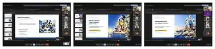

Виховні, інформаційно-просвітницькі та правопросвітницькі заходи зі студентами групи, спрямовані на розвиток відповідальності, правової обізнаності, безпечної поведінки та активної участі в освітньому житті.
2026/2027Навчальний рік • матеріали роботи з групою ФМБ-42К спеціальності 181 «Харчові технології», ОПП «Виробництво харчової продукції».
Правопросвітницька робота
Тиждень правових знань
⚖️
Онлайн-захід • Google Meet
Правова обізнаність та безпечна поведінка
06 жовтня 2026
У межах Тижня правових знань студенти групи ФМБ-42К фахової передвищої освіти долучилися до онлайн-заходу, присвяченого правам дитини, їх захисту та відповідальній поведінці в сучасному інформаційному середовищі. Під час зустрічі опрацьовано матеріали Конвенції ООН про права дитини та Закону України «Про охорону дитинства».
Окрему увагу приділено практичній темі «Азартні ігри та лотерея. Законно?». Студенти долучилися до створення та обговорення електронних інформаційних плакатів про правові обмеження, ознаки шахрайства, захист персональних і платіжних даних та правила безпечної поведінки.
📘
Конвенція ООН про права дитини
Основні права, принцип недискримінації, право на освіту, безпеку, розвиток і захист.
🛡️
Закон України «Про охорону дитинства»
Гарантії державного захисту дитинства, права та відповідальність дорослих.
🎲
Азартні ігри та лотерея
Електронні плакати: законність, ризики, шахрайські схеми та безпечні дії для студентів.
Результат: студенти закріпили знання про власні права та способи їх захисту, обговорили реальні ризики цифрового середовища й сформували практичні орієнтири відповідальної та безпечної поведінки.
Матеріали заходу
Презентації та інформаційні плакати
🖥️
Під час заходу студенти ознайомилися з презентаціями про права дитини та інформаційними плакатами, присвяченими правовій обізнаності, ризикам азартних ігор і безпеці в інтернеті.
📘Конвенція ООН про права дитини
Презентація • 9 слайдів
«Конвенція ООН про права дитини»
Права дитини, принцип недискримінації, захист, освіта, безпека та практичні ситуації для обговорення зі студентами.
Формат роботи: тематична онлайн-зустріч у Google Meet із переглядом презентацій, обговоренням інформаційних плакатів і практичних ситуацій.
Фотозвіт
Тиждень правових знань: онлайн-зустріч
📸
Фрагменти виховного заходу
Перегляд тематичних презентацій, обговорення прав дитини, відповідального ставлення до азартних ігор та правил безпечної поведінки в інформаційному просторі.
Електронні плакати та участь студентів у Google Meet.

Презентації та практичне обговорення прав дитини.
Робота з групою • Безпека життєдіяльності • 2026/2027
Безпека щодня: правила, що зберігають життя
🛡️
Інформаційно-виховна година • Google Meet • ФМБ-42К
Від знання правил — до відповідальних дій
Жовтень 2026
У групі ФМБ-42К фахової передвищої освіти ДНЗ «Одеське вище професійне училище морського туристичного сервісу» проведено інформаційно-виховну онлайн-зустріч, присвячену основам безпеки життєдіяльності, запобіганню травматизму та формуванню відповідального ставлення до власного життя і здоров’я. Захід відбувся у форматі демонстрації тематичної презентації, пояснення правил і спільного розгляду повсякденних ситуацій.
Особливу увагу приділено реальним загрозам в умовах воєнного стану: підозрілим і вибухонебезпечним предметам, небезпечним ділянкам місцевості, сигналам оповіщення, вибору безпечного маршруту, поведінці в громадських місцях. Окремі питання стосувалися дорожнього руху, електроприладів, водойм, особистої гігієни, харчової безпеки та цифрового шахрайства.
Основна ідея заняття: безпечна поведінка починається з уміння вчасно розпізнати небезпеку, не ризикувати без потреби, правильно повідомити відповідні служби та допомогти іншим без створення додаткової загрози для себе.
Основні змістові напрями виховної роботи
🚦 Правила дорожнього руху
Безпека пішоходів та пасажирів, переходи й світлофори, видимість у темну пору доби, уважність біля проїзної частини та неприпустимість користування телефоном у небезпечній дорожній ситуації.
💥 Мінна безпека
Ознаки потенційно небезпечних предметів і територій, заборона наближатися, торкатися або переносити знахідки. Алгоритм: зупинися — не чіпай — відійди безпечним шляхом — попередь інших — телефонуй 101 або 102 з безпечного місця.
⛈️ Небезпечні погодні умови
Дії під час сильного вітру, грози, ожеледиці, зливи та різких змін погоди. Важливість перевірки попереджень, уникнення небезпечних дерев, конструкцій, дротів і слизьких ділянок.
🌊 Безпека на воді й кризі
Вибір дозволених і безпечних місць, дотримання обмежень, врахування течії, хвиль і погоди. Не виходити на неперевірений лід; у разі надзвичайної події негайно викликати 101 або 112 та не наражати себе на ризик.
⚡ Електробезпека та пожежна безпека
Правила користування справними електроприладами, подовжувачами, кухонним обладнанням; дії при запаху горілого та задимленні. Не торкатися пошкоджених проводів; за необхідності евакуюватися та телефонувати 101 або 112.
🍽️ Гігієна та харчова безпека
Миття рук, санітарний стан робочого місця, чистота спеціального одягу та інвентарю, належне зберігання продуктів, профілактика харчових отруєнь і запобігання перехресному забрудненню — особливо актуально для майбутніх фахівців харчової галузі.
📱 Інформаційна безпека
Обережність щодо підозрілих повідомлень, фішингових посилань і запитів на одноразові коди з SMS. Захист особистих даних, обачне користування соціальними мережами та перевірка джерел інформації.
🤝 Безпечне освітнє середовище
Взаємоповага, профілактика булінгу й насильства, відповідальна поведінка в колективі та громадських місцях, своєчасне звернення по допомогу і дотримання правил закладу освіти.
Зв’язок із тематичними протоколами інструктажів
Під час організації виховної роботи використано тематичну структуру комплекту протоколів інструктажів групи ФМБ-42К. Вона охоплює питання безпеки під час канікул і святкових днів; профілактики тютюнопаління, вживання алкоголю та наркотичних речовин; безпечної поведінки в побуті; дотримання правил дорожнього руху; санітарно-епідеміологічних і гігієнічних норм.
Окремими напрямами передбачено правила безпечної поведінки під час громадських заходів і зібрань, надзвичайних погодних умов, перебування на воді, профілактики харчових отруєнь, дотримання вимог безпеки в навчальному корпусі та гуртожитку, заборони приносити небезпечні, вибухонебезпечні й легкозаймисті речовини.
До комплексу також входять профілактика інфекційних захворювань, зокрема туберкульозу, ВІЛ-інфекції та вірусних гепатитів; безпечна поведінка на залізничному транспорті; правила користування електричними приладами; профілактика булінгу та насильства. Матеріали допомагають системно формувати культуру особистої, громадської та професійної безпеки.
Практичне обговорення
У презентації запропоновано ситуації, у яких необхідно швидко прийняти безпечне рішення: невідомий металевий предмет біля дороги; подовжувач, що іскрить; повідомлення з проханням надати код підтвердження; людина, яка провалилася під лід. Завдання такого формату — не лише повторити правила, а й розвинути здатність правильно діяти в умовах стресу, оцінювати ризики та не піддаватися небезпечним імпульсам.
Підсумок заходу: зустріч була спрямована на закріплення правил безпечної поведінки, розвиток уміння розпізнавати ризики та приймати відповідальні рішення в побуті, громадському просторі й майбутній професійній діяльності.
Фотозвіт виховної години
Початок онлайн-виховної години «Безпека щодня: правила, що зберігають життя». Відкрити фото ↗Мінна безпека: як поводитися з підозрілими та вибухонебезпечними предметами. Відкрити фото ↗Особиста гігієна та культура безпечної роботи з харчовими продуктами. Відкрити фото ↗Практичне обговорення ситуацій: підозрілий предмет, електроприлади, шахрайські повідомлення, небезпека на льоду. Відкрити фото ↗Правило «НЕ»: не підходь, не чіпай, відійди, повідом. Відкрити фото ↗Безпечна поведінка біля моря, річок та інших водойм. Відкрити фото ↗
Робота з групою • Світові освітні ініціативи
Всесвітній день продовольства — 2026
🌍
Тематичний перегляд презентації • Google Meet • ФМБ-42К
«Інновації сьогодні. Харчування завтра»
16 жовтня — міжнародна дата
У межах виховної та інформаційно-просвітницької роботи зі студентами групи ФМБ-42К організовано тематичний перегляд презентації, присвяченої Всесвітньому дню продовольства, який щороку відзначають 16 жовтня. Учасники ознайомилися з матеріалами Продовольчої та сільськогосподарської організації ООН (FAO), присвяченими продовольчій безпеці, сталому харчуванню, інноваціям та спільній відповідальності за майбутнє продовольчих систем.
Презентація «Інновації сьогодні. Харчування завтра» стала приводом поговорити про те, як наукові досягнення, технології, традиційні знання та відповідальні рішення можуть сприяти доступності безпечної й поживної їжі. Для здобувачів освіти харчового профілю ці питання мають безпосередній зв’язок із професійною діяльністю, якістю продуктів, економним використанням сировини й екологічною свідомістю.
🌱 Продовольча безпека й доступність їжі
Потреба у збалансованому харчуванні, проблеми голоду та нерівного доступу до продовольства, міжнародна співпраця й роль свідомого споживання.
💡 Технології та інновації
Поєднання сучасних технологій, наукових підходів і традиційних знань задля стійкого виробництва, зберігання та перероблення харчових продуктів.
♻️ Втрати продовольства та харчові відходи
На прикладах інфографіки розглянуто етапи, на яких втрачаються продукти: виробництво, післязбиральна обробка, торгівля, заклади харчування та домашнє споживання.
👩🍳 Відповідальність майбутніх фахівців
Планування закупівель, раціональне використання продуктів, дотримання термінів і умов зберігання, ощадливі технології приготування, мінімізація харчових відходів без порушення вимог безпечності.
Під час перегляду студенти також ознайомилися з міжнародними інформаційними ресурсами FAO та матеріалами про Музей харчування. Обговорено можливості участі молоді в освітніх і соціальних ініціативах, спрямованих на зменшення втрат продовольства, збереження природних ресурсів і формування культури відповідального споживання.
Важливий акцент зроблено на професійному вимірі теми: майбутній кухар або фахівець ресторанного господарства має не тільки готувати якісну їжу, а й розуміти її шлях від виробника до споживача, цінність продукту, екологічні наслідки харчових відходів і значення технологічної дисципліни.
Освітнє значення заходу: розширення уявлень про світові продовольчі виклики, виховання екологічно відповідальної поведінки, заохочення до раціонального використання ресурсів та усвідомлення ролі професій харчової галузі у створенні сталого продовольчого майбутнього.
Тема перегляду: «Інновації сьогодні. Харчування завтра» — Всесвітній день продовольства 2026. Відкрити фото ↗Знайомство з міжнародною ініціативою World Food Day та ідеєю спільних дій. Відкрити фото ↗Інформаційні матеріали FAO про сталу продовольчу систему та участь молоді. Відкрити фото ↗Віртуальні освітні ресурси FAO: Музей харчування та міжнародні ініціативи. Відкрити фото ↗Обговорення втрат продовольства й харчових відходів: від виробництва до споживання. Відкрити фото ↗
Робота з групою • Національно-культурне виховання
День української писемності та мови — 2026
🇺🇦
Тематичні заходи • ФМБ-42К
«Українська мова: пам’ять, єдність, майбутнє»
26–28 жовтня 2026
У межах роботи зі студентами групи ФМБ-42К до Дня української писемності та мови заплановано послідовність тематичних заходів 26–28 жовтня 2026 року.
26 жовтня 2026 року проведено виховну годину на тему «Українська мова: пам’ять, єдність і майбутнє» з переглядом тематичної презентації. Під час заходу студенти обговорювали історичний, культурний і професійний виміри української мови, її роль у збереженні пам’яті поколінь, формуванні єдності та сучасному професійному спілкуванні.
27 жовтня 2026 року студенти групи долучилися до написання Радіодиктанту національної єдності у форматі онлайн-зустрічі. Участь зафіксовано під час трансляції та після завершення диктанту.
28 жовтня 2026 року проведено роботу з електронними плакатами онлайн-виставки «Вислови видатних українців про нашу мову». Студенти переглянули шість тематичних плакатів, обговорили зміст висловів та їхні смислові акценти.
🕰️ Історія й писемна традиція
Чому День української писемності та мови відзначають 27 жовтня, шлях писемного слова від рукописної спадщини до сучасної української.
🌍 Українська у світі
Мова в родинах і громадах, книгах і мистецтві, освіті, медіа та цифровому просторі.
🎬 Спільний перегляд і обговорення
Матеріали до інформаційної години «Українська мова в світі» та документального освітнього фільму «Повернення до української мови».
🖼️ Онлайн-виставка
Шість електронних плакатів із висловами видатних українців про мову, запитання для обговорення та підсумкова рефлексія.
Формат роботи: перегляд презентації, обговорення запропонованих питань, робота з електронними плакатами та рефлексія про особисту мовну практику й роль української мови в професійному та повсякденному житті.
26 жовтня — виховна година та перегляд презентації
Початок виховної години «Українська мова: пам’ять, єдність і майбутнє» та представлення тематичної презентації.Перегляд і обговорення презентації: українська мова як пам’ять, єдність і складова сучасного культурного простору.28 жовтня — онлайн-виставка: шість електронних плакатів із висловами видатних українців про українську мову.28 жовтня — обговорення одного з плакатів виставки: вислову Павла Грабовського про особливу цінність рідної мови.
28 жовтня — робота з електронними плакатами
Онлайн-виставка «Вислови видатних українців про нашу мову»: перегляд шести плакатів, аналіз висловів та обговорення їхнього змісту зі студентами групи ФМБ-42К.
27 жовтня — Радіодиктант національної єдності
Процес написання Радіодиктанту національної єдності — спільна участь студентів групи ФМБ-42К у прямій трансляції.Після завершення диктанту учасники демонструють написані тексти — фотопідтвердження участі групи в Радіодиктанті-2026.